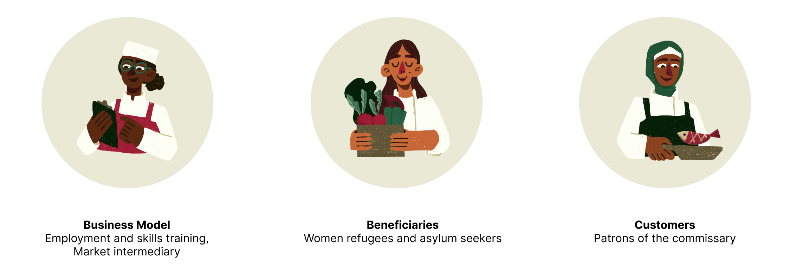

Addressing and Managing the Mental Load
UX / UI / PRODUCT DESIGN
OVERVIEW
The mental load is the often overlooked effort in daily domestic tasks, typically taken on by caregivers who handle more cognitive and emotional responsibilities than their partners. This can lead to overwhelm and exhaustion, leaving little room for self-care, as well as build resentment towards partners.
An app designed to offer decision support, streamlined task management, integrated self-care reminders, and encourage productive communication between couples in order to share the mental load better.

Following my research, I came to these 2 conclusions:
HOW MIGHT WE
It is more difficult for refugee women to find good employment opportunities due to language barriers, unfamiliarity with the local job market, and possibly a lack of relevant skills and training.
Refugee women are often isolated due to having to leave behind friends and other support systems. It is more difficult to rebuild relationships and establish a sense of community in their new environment.
While trying to fit into a new culture, it is difficult to preserve heritage. Many refugees face difficulty in passing down traditions and stories to future generations.
Gender inequality continues to be prevalent in many facets of life, and for refugee women the gap is greater, limiting their ability to engage in entrepreneurial activities.
There is an opportunity to create a positive impact for both refugees and the broader community by having a service run by refugees to fulfill a gap in the market that lacks a combination of authentic culinary experiences, inclusivity, and the growing appreciation for the stories and traditions behind the food.
Many refugees possess unique culinary skills and traditional recipes from their home countries. Starting a food business allows them to leverage these skills while sharing their cultural heritage.
I performed a competitor analysis on similar organizations to identify gaps in the market.
KEY TAKEAWAYS
Operating from a spacious commissary in North Vancouver's Pipe Shop building, Nomu offers a 6-month intensive program. This initiative equips refugees with the skills to become entrepreneurs. The program includes access to educational workshops, kitchen facilities, sales channels, and mentorship, aiming to help refugees launch successful culinary businesses and achieve financial independence.
I created a user flow of key screens and interactions I wanted to design and showcase. A major aspect I wanted to highlight was the ordering and purchasing flow.

I created rough and basic representations of the user interface with quick sketches before blocking them out on Figma. While my sketches served as a foundation for exploring ideas and iterating quickly, I quickly moved into building mid-fidelity wireframes to gather feedback.
After conducting 3 usability tests, some changes were made to incorporate storytelling and elevate the user experience on the site.
Users noted that there could be an opportunity to do something unique with the dish detail page as it was quite standard.
After many iterations, I created a design that displays the dishes in a functional but delightful way. It highlights the cook behind the dish and their story.
Users felt that it was interesting to see the faces behind the food in the dish detail page, but wished there was something they could do beyond reading about the people.
I added an extra step in the checkout flow before the payment page to showcase the students behind the dishes to encourage tipping.
An earthy colour palette with bright red accents and playful illustrations express the brand’s nurturing and transformative influence.
Initially I had intended to build more pages. I had roughed out a vague site map that featured many more screens. However, I realized that I should only be aiming to build my MVP given the short timeline I had in order to be able to have nicely built out pages that would give maximum impact instead of half-done several screens.
As an important goal of the site was to incorporate storytelling to foster empathy and support for refugee women, I went back and forth with my mentor, Christina to see which designs were successful in reaching that goal. I learned to find a balance between sticking to classic UX/UI patterns while experimenting with different design layouts that were visually delightful but functional.